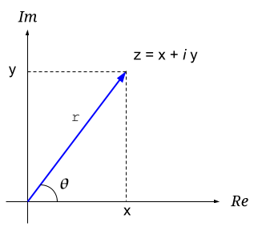
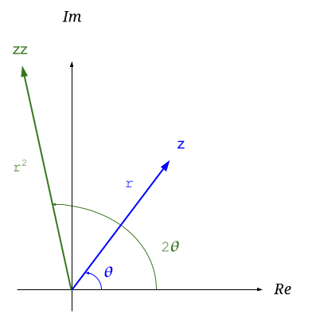

In this quick post I'll dispel a common confusion in the basic math of complex numbers. It's often useful to calculate the norm-square (also known as absolute square) of a complex number z. This norm-square is denoted . One could naively expect that:
However, that's false! The way to calculate norm-square is:
Where is the complex conjugate of z. But why? To understand the mechanics of this calculation, let's start by defining what a norm is.
The norm of a complex number
Informally, a norm is a generalization of the concept of "length" or "size". For a real number r, the norm is its absolute value . No matter if the number is positive or negative, the norm is its "length" - the distance from the origin.
A norm is defined similarly for complex numbers. Here's a standard geometrical interpretation of a complex number z, showing both cartesian and polar coordinates:
The "norm" of z is the length of the blue line, or the distance of its endpoint from the origin (in the polar representation, it's exactly r). The norm of a complex number uses the same notation as the absolute value: , because it means the same thing. Another common name for the norm of complex numbers is modulus.
Norm: a formal definition
The formal definition of a norm (from Wikipedia) talks about generalized vector spaces. Since complex numbers are also a vector space (of dimension 1), we can simplify the definition just for as follows:
A norm on is a real-valued function with the following properties:
- Triangle inequality: for all
- Absolute homogeneity: for all and all
- Positive definiteness: for all if then .
- Non-negativity: for all
For a complex number z, setting makes all these properties work out intuitively:
- Graphically, complex numbers add like vectors; therefore, given z and w, the length is always at most the combined lengths .
- When we scale z by a scalar s, its length is scaled similarly. Think about the polar representation of a complex number: . Multiplying that by s, we get , which has length sr.
- In the polar representation: if , then , meaning that .
- By definition, a length is non-negative; it's the distance from the origin.
Why z squared is not a norm-square
Now it's time to go back to the question we started the post with. Why isn't (or ) the norm-square?
For a general , we can calculate as follows:
This is clearly a complex number, with a real and an imaginary component. It doesn't seem to fit the requirement of being a "length" or distance from the origin, which we'd expect to be a real quantity.
Multiplying z by itself in polar coordinates can be insightful:
It seems like we almost get what we want, because the magnitude of is , which seems like the right magnitude for the square of the distance from origin; but there's still an angle... Here's how it looks geometrically:
Recall that when multiplying two complex numbers - their magnitudes multiply, but their angles add. In this case, we got the we needed, but with an angle of , which is not what we need. If only we could get rid of the angle somehow... keep this thought in your head for the next section.
Looking at the formal definition of the norm, it's clear right away that won't do. The norm is defined as a real-valued function, whereas is not real-valued.
zz* is a norm-square
The conjugate of z is defined as:
Or in polar form:
Recall how we had that pesky angle remaining when calculating ?
Let's find a way to get rid of it; since angles add when we multiply complex
numbers, to get rid of  we should multiply z by something with
an angle of . Do you see where this is going?
we should multiply z by something with
an angle of . Do you see where this is going?
Voila! Multiplying z by its complex conjugate gives us a real number. Moreover, it gives us exactly the number we want - . This is the norm-square, or . The norm of z is and is precisely r, the "length" of the complex number.
Let's verify this works in cartesian coordinates:
Indeed, this makes intuitive sense because:
And this is exactly what we expect when calculating the length of z.
Conclusion
The norm square of a complex number z is denoted . In this post we've seen why
(even though the mathematical notation makes it seem like this should be true). Instead, this is how the norm-square is actually calculated:
With the norm itself being
Appendix 1: zz* and the formal definition of norm
Let's get back to the formal definition of norm and show that satisfies it.
First of all, we've already seen that is a real number, no matter what z is. Therefore, it can indeed serve as a real-valued function .
The proof of property 1 is a bit tedious, but straightforward using the Cauchy-Schwartz inequality.
For property 2, since s is a real number, the square root of its square is just its absolute value:
For property 3, consider a z such that:
Since neither addend inside the square root can be negative, clearly both x and y must be zero, meaning that .
Property 4 is similarly straightforward: given real components x and y, is non-negative.
Appendix 2: norms of expressions
Say we want to calculate the norm squared of some expression involving complex numbers; the simplest example would be a sum of z and w:
We go about it pretty much the same way:
If we want to push a little further, the imaginary components of cancel out, while their real components are duplicates; so we end up with: